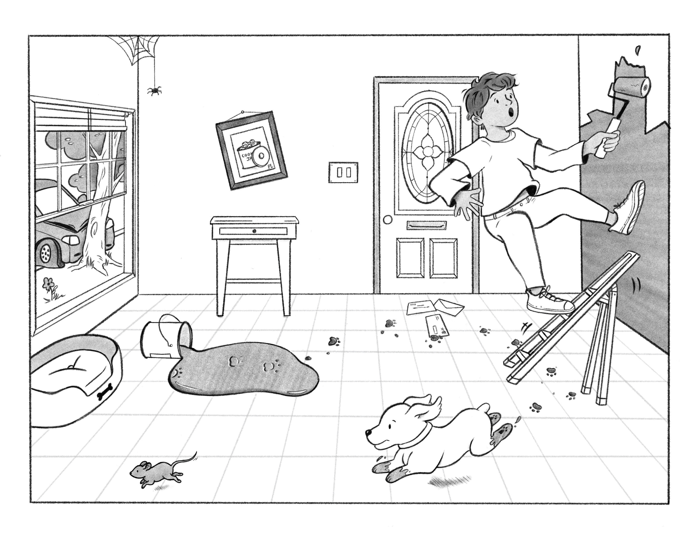
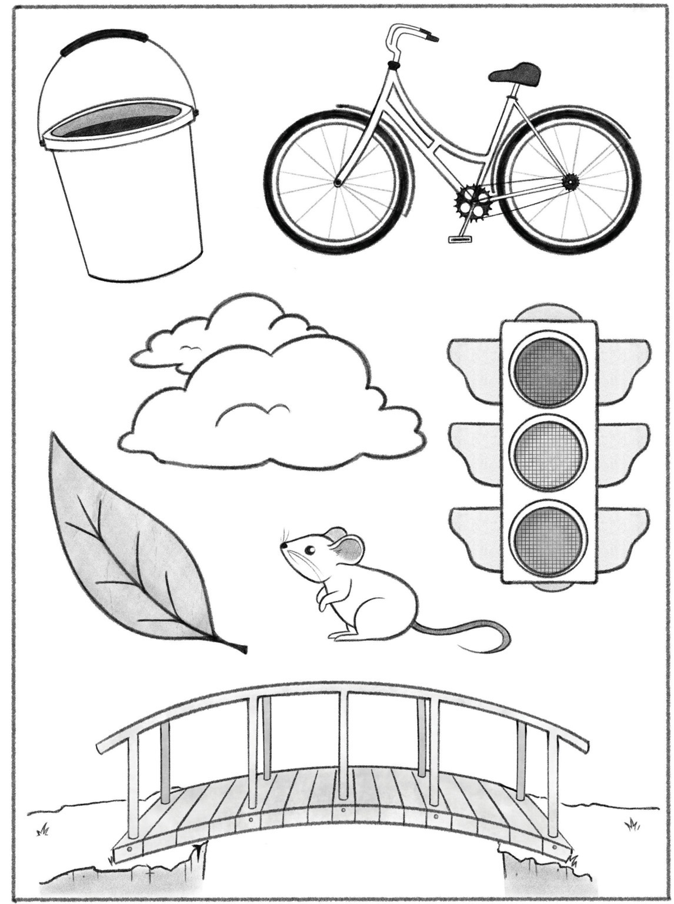

Case
Timing
Clinical
NIHSS
Score each item in NIHSS order. Use the prompts to check the required exam maneuver; do not coach except where the NIHSS instructions allow encouragement.
NIHSS General Instructions
- Administer stroke scale items in the order listed.
- Record performance in each category after each subscale exam.
- Do not go back and change scores.
- Follow directions provided for each exam technique.
- Scores should reflect what the patient does, not what the clinician thinks the patient can do.
- Record answers while administering the exam and work quickly.
- Except where indicated, the patient should not be coached.
Best Language Picture

Naming Card

Reading Sentences
You know how.
Down to earth.
I got home from work.
Near the table in the dining room.
They heard him speak on the radio last night.
Dysarthria Word List
MAMA
TIP-TOP
FIFTY-FIFTY
THANKS
HUCKLEBERRY
BASEBALL PLAYER
CATERPILLAR
IVT Detailed Checklist
Indications / supportive criteria
Contraindications / caution flags
Imaging
EVT Detailed Checklist
Indications / supportive criteria
Contraindications / caution flags
Mechanism / Secondary Prevention
TIA ABCD2 Score
ABCD2: 0
TIA risk pathway will appear here.